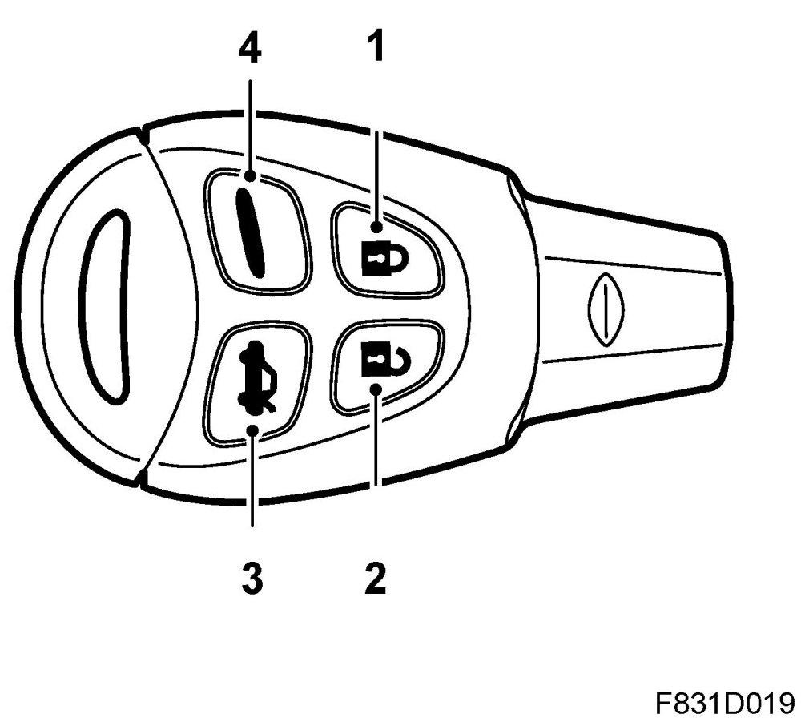

Key
Key
Main task
The key's task is to:
- Send radio messages regarding which button has been pressed on the remote control and how it has been activated, e.g. single, double or continuous pressing.
- Mobilise the car via the transponder
- Via the transponder send the battery status for the remote control
Type
The key is made of plastic and has no mechanical coding. The part of the key inserted in the ignition has a square section in order to allow turning of the ignition switch.
The key includes the following:
- Battery powered remote control
- Transponder (Transponder identification is fully independent of the remote control's battery and its status).
- Emergency key
The remote control has 4 buttons
1. Lock

2. Unlock
3. Unlocking /opening the boot lid
4. Panic alarm
The remote control battery is a lithium type and has a normal service life of 4 years. The battery is 3 volt and is marked CR 2032. For optimum performance and service life length, use Saab original batteries (Sony or Panasonic CR2032). The remote control code, which may require synchronisation after battery replacement, is synchronised by inserting the key into the ignition. The same procedure may be required if power is disconnected to the car or the CIM, which can occur in conjunction with service or car battery replacement.
IMPORTANT: Draw the customer's attention to the fact that all remote controls must be synchronised by placing the key/keys in the ignition lock. If this is not done, the remote control will not work.
The remote control's receiver is located in the CIM. The remote control has a standard range of more that 25 m (Japan 3 m).
Keys that have been programmed for one car cannot be reprogrammed for another car. If all the keys are lost, the CIM must be replaced. Key programming is performed with the diagnostic tool, refer to Key programming. Key programming starts automatically by erasing all the keys. The programming process includes the transponder and the remote control. 5 keys can be programmed. Remote control synchronisation is not necessary for key programming. The number of programmed keys is shown on the SID if the remote control button for boot lid opening is pressed in when the ignition is in the ON position.
There is a concealed, conventional emergency key inserted into the key. The idea of the emergency key is to allow the car to be opened when it cannot be unlocked by other means, for example, when the battery in the car or in the key's remote control has run down.
NOTE: If the remote control has been turned from ON to OFF before the car is stationary, it may be impossible to turn to LOCK. In this case, turn the remote control to ON until the ABS lamp goes out, approx. 2 seconds. Then turn it back to OFF.
Connect
The transponder is integrated in the key and consists of a chip, which is activated by a transmitter in the form of a coil fitted in the ISM. The transmitter is activated when the key is inserted in the ignition and the transponder then answers with a unique code. The code is received by the coil in the ISM and is sent via the K-cable to the CIM for control. Transponder identification is fully independent of the remote control's battery and its status.